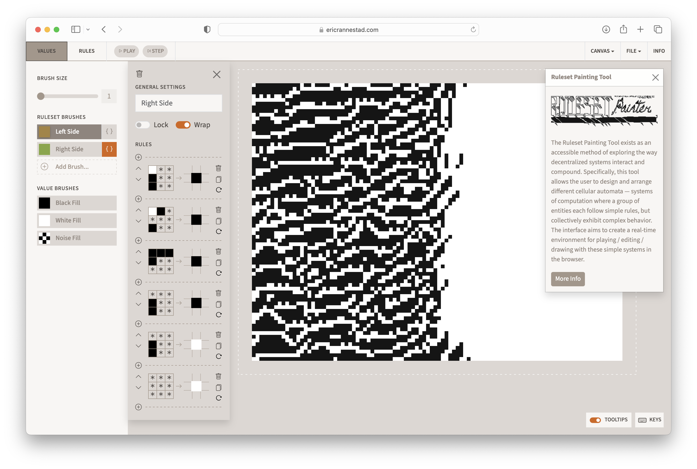

The Ruleset Painting Tool exists as an accessible method of exploring the way decentralized systems interact and compound. Specifically, this tool allows the user to design and arrange different cellular automata — systems of computation where a group of entities each follow simple rules, but collectively exhibit complex behavior. The interface aims to create a real-time environment for playing/editing/drawing with these simple systems in the browser.
Ruleset Painting Tool http://ericrannestad.com/ruleset-painting-tool ↗ Web Application 2023
